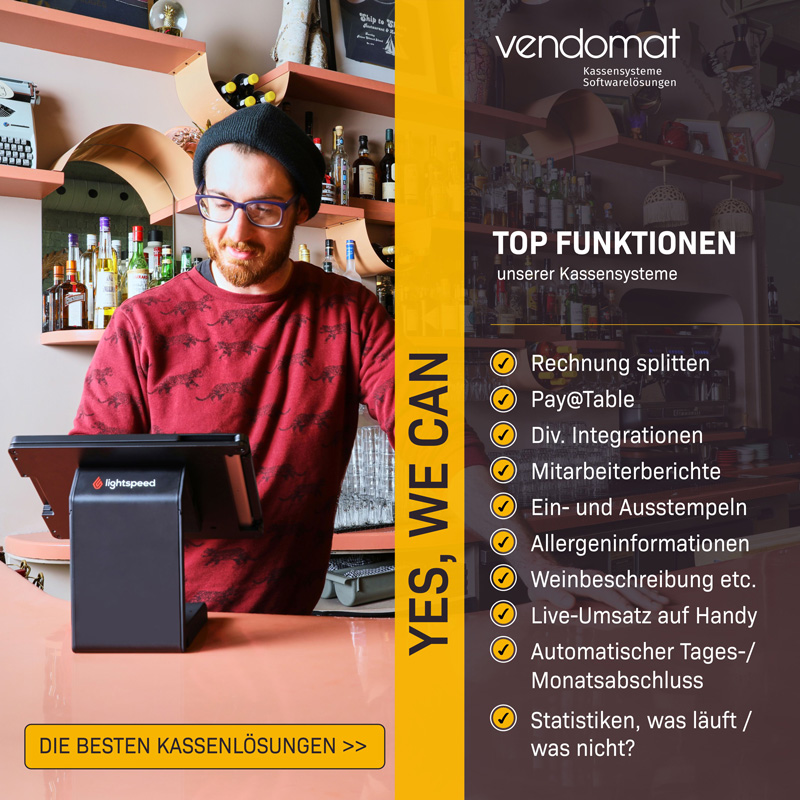
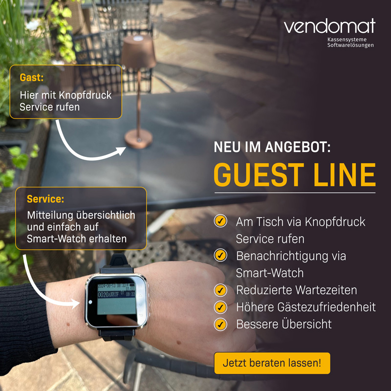

Social Media
Here you'll find a selection of my social media design work from the past year. I've included only some of the highlights, presented in a mixed format so you can scroll through and get a feel for different styles and approaches.
vendomat


